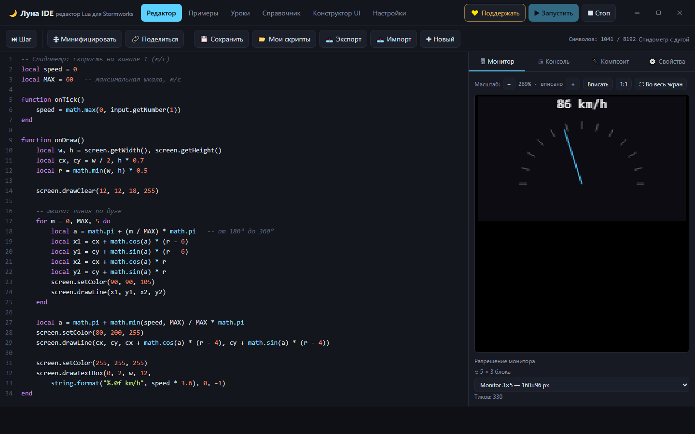
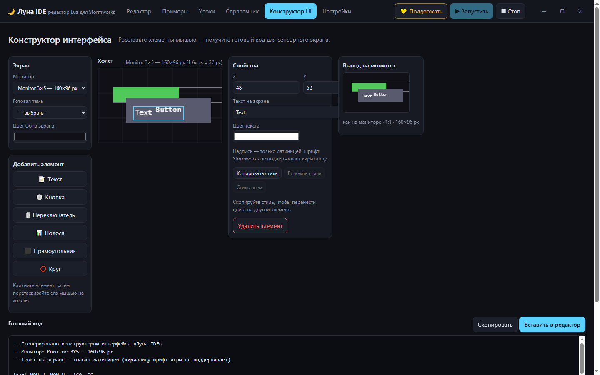
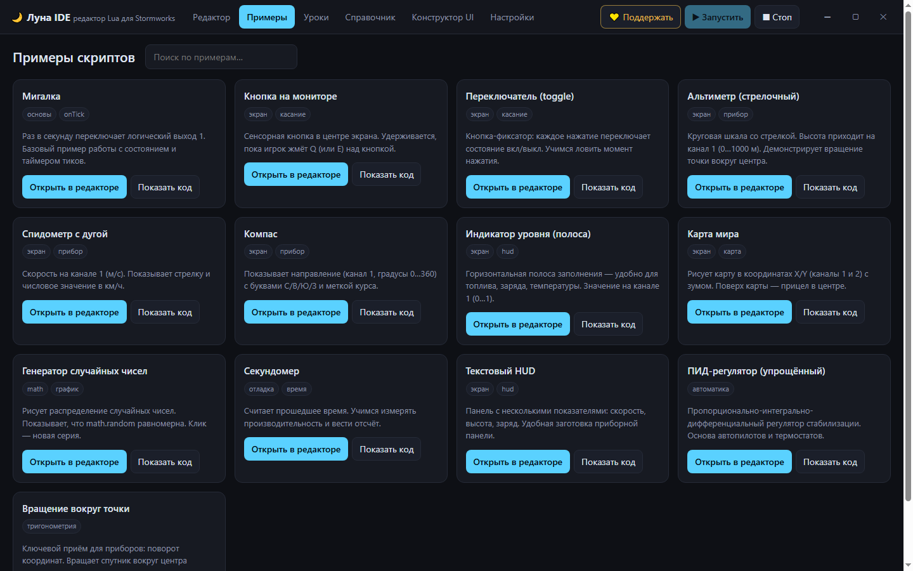
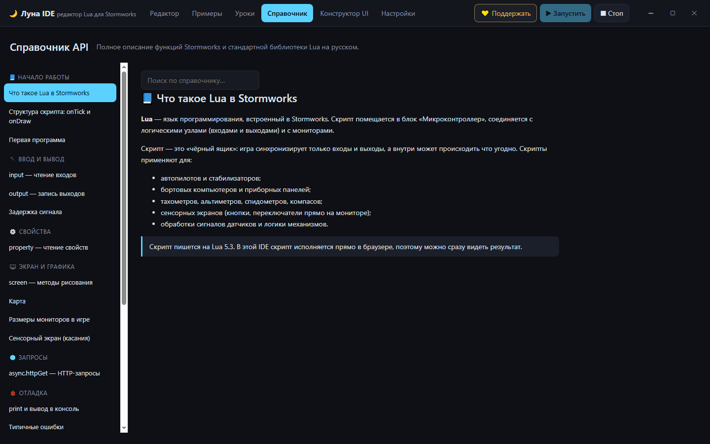

Пишите, запускайте и отлаживайте скрипты для микроконтроллеров Stormworks, не зная английского. Реальный интерпретатор Lua 5.3, виртуальный монитор, справочник API, уроки и конструктор интерфейсов — всё внутри одной программы.
Бесплатно. Установщик ~99 МБ · веб-версия ~0,3 МБ. Регистрация не нужна, интернет во время работы не требуется.
В Stormworks код микроконтроллеров пишут на Lua, а вся документация и сам редактор в игре — на английском. Луна IDE — отдельная программа, которая даёт русскоязычному игроку всё то же самое, но понятным языком: подсказки, уроки, справочник и сообщения об ошибках на русском.
Неофициальный инструмент сообщества. Не связан с разработчиками Stormworks.
Скрипты исполняются по-настоящему (движок Fengari): работают onTick(),
onDraw(), input, output, property
и screen. Бесконечные циклы прерываются автоматически.
Видно результат onDraw(). Реальные размеры мониторов игры (1 блок = 32 px),
масштаб, полноэкранный режим, клик по экрану = нажатие сенсора.
Полное описание API Stormworks и стандартной библиотеки Lua плюс 10 пошаговых уроков — от переменных до тригонометрии приборов.
Расставляете кнопки, полосы и текст мышью — программа сама пишет Lua-код для сенсорного экрана. Готовые цветовые темы и копирование стиля одним кликом.
Счётчик символов с предупреждением на 90 % и жёстким ограничением, как в игре. Минификатор сжимает код, показывая, влезает ли результат в лимит.
Черновики в браузере, экспорт и импорт файлов .lua, а также ссылка-шаринг,
которая при открытии сразу загружает ваш код. Всё локально, без сервера.
20 видов элементов: кнопки, фиксаторы, тумблеры, лампы-индикаторы, полосы, шкалы,
диалы, графики (линия / заливка / столбики), 7-сегментный и сегментный индикаторы,
батарея на 8 сегментов. Задаются диапазон значений, цвета по порогам и инверсия,
привязка к каналам композита, а на выходе — готовый Lua-код (onTick + onDraw).
Кнопка «⟳ Из кода» сама находит входы и выходы (input.getNumber/getBool,
output.setNumber/setBool), подставляет имена из local и
показывает список локальных переменных. Каналы больше не нужно вводить вручную.
В шапке программы и здесь, на сайте, — кнопка перехода в наш Telegram: новости, обновления и разборы скриптов — t.me/luna_ide.
Копирование и вставка стиля элемента одним кликом, темы оформления приборной панели, счётчик длины кода с предупреждением о лимите игры (8192 символа), новые проверки качества сборки.




Luna-IDE-Setup-1.2.0.exe.F5).Windows может показать предупреждение SmartScreen («Неизвестный издатель») — так бывает у программ без платной цифровой подписи. Нажмите «Подробнее» → «Выполнить в любом случае».
Если не хотите ничего ставить — есть веб-версия. Это те же файлы, что и в настольной программе, только открываются в браузере: ничего скачивать и устанавливать не нужно.
В браузере недоступен только async.httpGet (ограничение самого
браузера). В настольной версии работает всё.
Нет. Это неофициальный инструмент сообщества, не связанный с разработчиками игры. Имена функций API стоит сверять с игрой: официальная документация меняется.
Нет. И настольная, и веб-версия работают полностью офлайн — все библиотеки лежат рядом с программой, данные хранятся на вашем компьютере.
Шрифт Stormworks не поддерживает кириллицу: русские надписи на экране превратятся в
квадратики. Поэтому весь экранный текст — латиницей, а комментарии в коде и вывод
print() в консоли можно писать по-русски.
Да. Кнопка 🗜 Минифицировать сжимает код под лимит игры (8192 символа), а
«Экспорт» сохраняет файл .lua, который удобно вставить в редактор Stormworks.
Версия 1.2.0 · Windows 10/11 (x64) · бесплатно